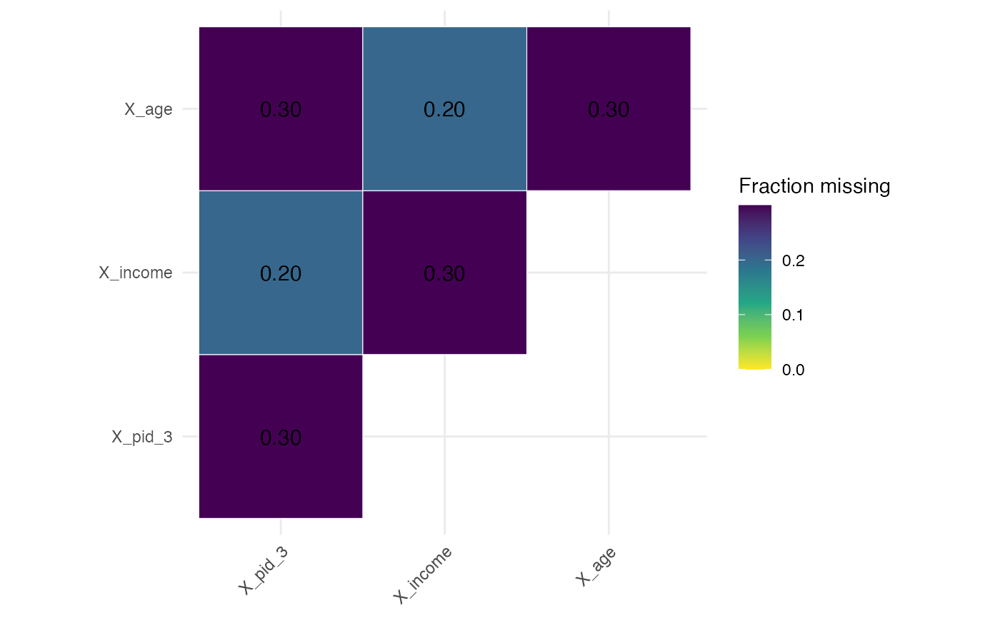

Summarize and visualize missingness of covariates
Source:R/covariate_missingness.R
check_covariate_missingness.RdComputes missingness summaries for a set of covariates and displays a joint missingness heatmap (upper-triangle including the diagonal).
Value
Invisibly returns a list with two elements:
- summary
A tibble summarizing total cases, total missing, and fraction missing per variable.
- heatmap
A [ggplot2::ggplot()] object showing the upper-triangle joint missingness (including diagonal).
Details
If no variables are specified, it defaults to all variables starting with `"X_"`, excluding columns ending with `_nona` or `_missing`.
This function supports both unquoted column names and tidyselect helpers such as [dplyr::all_of()], [tidyselect::starts_with()], etc.
See also
Other per-study checks:
check_attrition(),
check_balance(),
check_missingness_nona(),
check_smd(),
check_y_bounds()
Examples
dat <- data.frame(
X_pid_3 = c("A", NA, "B", "A", NA, "B", "A", NA, "B", "A"),
X_income = c(100, 200, NA, 400, NA, 300, 500, NA, 600, 700),
X_age = c(25, NA, 30, 40, NA, 35, 45, NA, 50, 55)
)
# X_pid_3 and X_income have similar missingness
check_covariate_missingness(dat, X_pid_3, X_income, X_age)
#> # A tibble: 3 × 4
#> variable total_cases total_missing_cases fraction_missing_cases
#> <chr> <int> <int> <dbl>
#> 1 X_pid_3 10 3 0.3
#> 2 X_income 10 3 0.3
#> 3 X_age 10 3 0.3

# Or default to all "X_" columns
check_covariate_missingness(dat)
#> # A tibble: 3 × 4
#> variable total_cases total_missing_cases fraction_missing_cases
#> <chr> <int> <int> <dbl>
#> 1 X_pid_3 10 3 0.3
#> 2 X_income 10 3 0.3
#> 3 X_age 10 3 0.3
 # Or use tidyselect helpers
vars <- c("X_pid_3", "X_income", "X_age")
check_covariate_missingness(dat, dplyr::all_of(vars))
#> # A tibble: 3 × 4
#> variable total_cases total_missing_cases fraction_missing_cases
#> <chr> <int> <int> <dbl>
#> 1 X_pid_3 10 3 0.3
#> 2 X_income 10 3 0.3
#> 3 X_age 10 3 0.3
# Or use tidyselect helpers
vars <- c("X_pid_3", "X_income", "X_age")
check_covariate_missingness(dat, dplyr::all_of(vars))
#> # A tibble: 3 × 4
#> variable total_cases total_missing_cases fraction_missing_cases
#> <chr> <int> <int> <dbl>
#> 1 X_pid_3 10 3 0.3
#> 2 X_income 10 3 0.3
#> 3 X_age 10 3 0.3